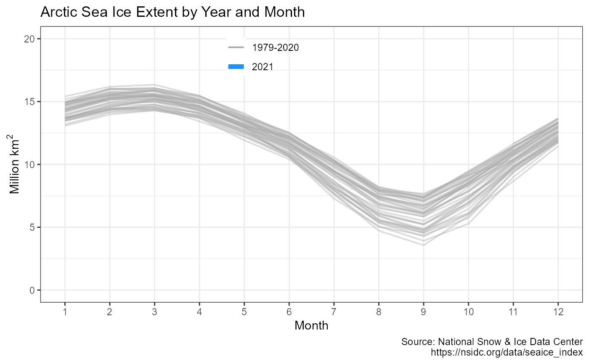
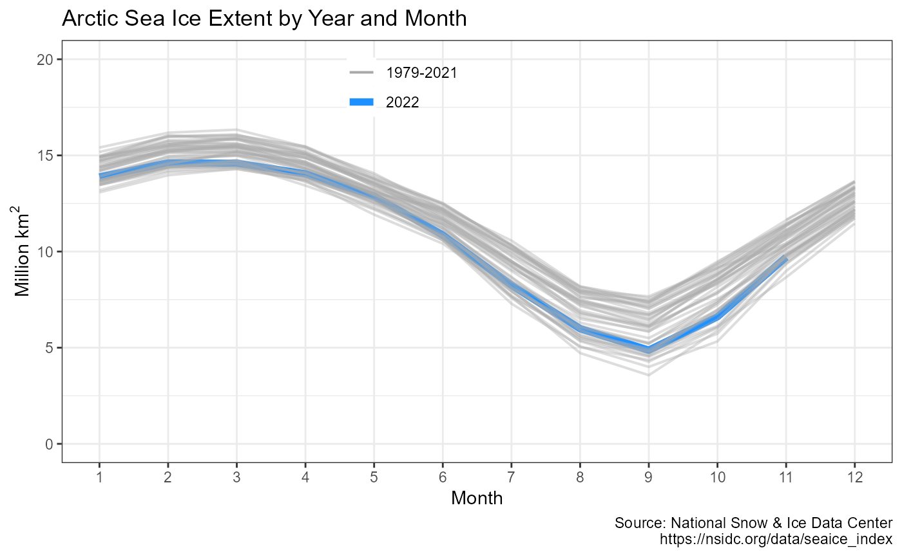
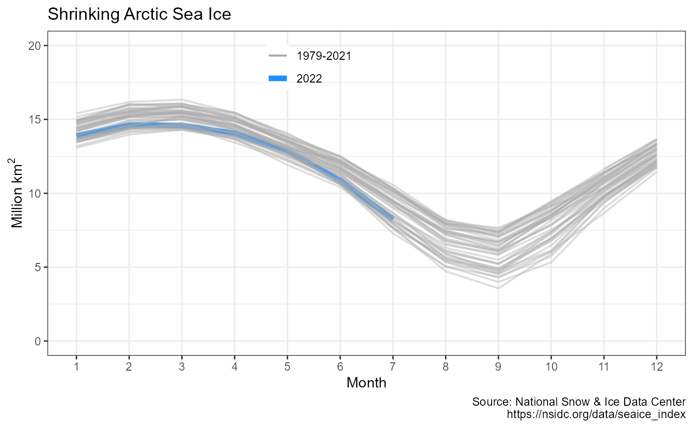

Plots the monthly Sea Ice Index data retrieved using get_icecurves() with ggplot2. The output ggplot2 object may be further modified.
plot_icecurves(dataset = get_icecurves(), region = "Arctic", print = TRUE)Name of the tibble generated by get_icecurves, defaults to calling get_icecurves
Used in chart title, defaults to "Arctic"
(boolean) Display sea ice ggplot2 chart, defaults to TRUE. Use FALSE to not display chart.
Invisibly returns a ggplot2 object with Sea Ice Index chart
plot_icecurves invisibly returns a ggplot2 object with a pre-defined Sea Ice Index chart using data from get_icecurves.
By default the chart is also displayed. Users may further modify the output ggplot2 chart.
Chart consists of one line per year showing monthly sea ice from January through December. Current year is highlighted.
# \donttest{
# Fetch historic monthly sea ice data since 1979:
icecurves <- get_icecurves()
#> Please set use_cache=FALSE if you are changing pole or measure from last cached data.
#
# Plot output using package's built-in ggplot2 defaults
plot_icecurves(icecurves)

# Or just call plot_icecurves(), which defaults to get_icecurves() dataset
plot_icecurves()
#> Please set use_cache=FALSE if you are changing pole or measure from last cached data.

p <- plot_icecurves(icecurves, print = FALSE)
p + ggplot2::labs(title='Shrinking Arctic Sea Ice') # }
